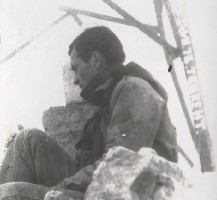

Привет всем петербургским, новосибирским, московским, харьковским, ташкентским, карельским, новомосковским, воскресенским, киевским, северодонецким и воронежским знакомым. Хочу вас позабавить своим рифмоплётством.
Лежу на полу, убаюканный жаркими спорами, где-то в темноте проносятся звёзды, где-то в глубине Земли сдвигаются мантии, плиты и кряжи, космический ветер сдувает последние крохи жизни на пол Галактики, где я и отдыхаю, убаюканный жаркими патриотическими дебатами...
Настройка инструмента . . . . . , заноза ты немилосердная, Быть тябе жареной в адском аду, Если болтливой на горе соседям Будешь и дальше. Сябе на бяду. Угомонись же, жестоко ты выйная, Совесть имей хоть на грош, твою мать, А не то будешь во аде бессильная Каленую сковородку лизать. Черти в аду поддадут тябе жару, Уголь, дрова, керосин пойдут в ход. А напоследок ещё скипидару Выльют вядро в твой злокозненный рот.
Игра
Стылой ночью усни без отчаянья, На луны жёлтый лик не кричи, И хоть утро наступит печальное, Но на людях о том промолчи. Затверди, как молитву, решение, Как цитатник, его заучи - Не сдаваться на милость лишениям, Но на людях о том промолчи. А когда луч надежды появится, Ты по дереву трижды стучи, Может быть, это чёрт дурью мается, Но на людях о том промолчи. Выбрось во поле без сожаления Ты от счастья былого ключи, Им не будет уже применения, Но на людях о том промолчи.
Твои линии плавны, а взгляды искристы, Не идешь, а плывешь над землей, Твои руки нежны, а движения быстры, Королевой стоишь предо мной. Твои алые губы всегда неприступны, Хоть и мягки и сладки как мёд, Твои речи обманчивы, может - преступны, Хоть растопят они даже лёд. Ты любого телка можешь так заарканить, Что не вырвется он, не уйдет, Но за что же меня ты решила тиранить? Разве дёготь мой сластит твой мёд?
Ветер коварный попутный Вёл по дороге кривой, Не ослаблял ни минуты Свой провожающий вой.
Сердитая особа С глазами карими, Уже почти полгода, Как вами ранен я. Но вам всё безразлично, На всё вам наплевать, Хоть знаете отлично, Что мне несдобровать От этой муки смертной В тиши ночи глухой, От грусти беспросветной В судьбе моей лихой. Ничто вашу твердыню Уже не пошатнет, И превращен отныне Я тоже в камень, в лед.
Я был бы точно - камень, А в сердце был бы - лёд, Когда б ты мне сказала: Ты просто идиот - Наивный, инфантильный, Не понимаешь ты, Что у твоих извилин Довольно простоты. Игрушки, кошки-мышки Воспринял ты всерьёз, Явившийся из книжки Придуманный курьёз. Остынь, вернись на землю, Печальный Дон Кихот, Людскому мненью внемли, Мечтатель-доброхот. Рассеялась бы стая Мечтаний, словно пыль, Осталась бы простая Простая проза, быль. И стал бы я отличным - Отличником почти - Поборником приличий, Что у людей в чести. Перечисляю: дача, Машина, дивиденд, А если в долг - отдача, Приличный чтоб процент Да на душе лишь - камень, Да в сердце только - лед, Да навсегда силками Птиц прерванный полет.
Неутомимый попутчик Вниз до конца провожал И для падения случай Не торопясь выжидал.
Вокруг Земли звёзд множество плывёт, Единственная только согревает, Притягивает, не отпускает, И в вакууме сгинуть не даёт. Холодный отражённый лунный свет Когда Земля глядит во мрак ночи - Лишь луч далёкой солнечной свечи, Лишь к ней летит рой бабочек-комет. Попутчицы планеты в небесах Совсем невзрачны были бы без Солнца, Кружа в ночи вокруг Земли дозором, Но блекнут и они в его лучах, Едва заглянет Солнышко в оконце, Всё озарив своим чудесным взором.
Любовью я опустошен вконец, Оставлены дела, занятья, книги, И лишь любви тяжелые вериги Терновый мой дополнили венец. Погас и без того несмелый взгляд, Во мне сомненья, горести и страхи Казнят нутро, будто палач на плахе, И жизнь идёт наощупь, наугад. Наступит ли пора, когда в огне Сгорит дотла душа, бесследно сгинет, Вернувшись в изначальное ничто Иль возродится новый дух во мне Оазисом в безжизненной пустыне? Один Господь ответит мне на то...
Проездом Вы благородны и красивы, Великодушны и чисты, А я, невежа неучтивый, Для вас лишь промельк суеты. Мелькну в окне вагона жизни На полустанке где-нибудь Вы отведёте взгляд капризно И свой продолжите вы путь. Благословляя вас в дорогу, Скажу: Счастливого пути! Чтоб от порога до порога Без злоключений вам дойти. В моей судьбе вы промельнёте Цветком нездешней красоты, Ну, а меня вы назовёте Зевком житейской маеты. Я остаюсь на полустанке, Уеду, нет - не всё ль равно? Вы жизнь на вечную стоянку Мою поставили давно...
Вниз заскользил по ухабам Падал и снова вставал, Ветер попутный неслабый В шею без устали гнал.
Я должен, должен сделать вид, Что равнодушен к ней, Пусть вид мой всех их убедит, Что я уже ничей, Что всё прошло, всё отлегло От сердца в никуда, Что всё исчезло, что могло, Что горе - не беда. Чтобы воскликнули они : "Пар выпущен, ура! Тебе он вовсе не сродни, Не пара, а мура. Лишь эпизод. Один из тех, Что ходят табуном, Он не был лучшей из потех, Да вовсе был ли он ?" Сам-то я знаю, кем была Она в судьбе моей И кем еще бы стать могла, Но я, как был, ничей. Уеду просто, без фанфар, Без шума и речей, Весь выпущен любовный пар, Я навсегда - ничей.
Как из тлена рождаются пламени Языки, всё горя веселей, Появилось второе дыхание В непротопленной жизни моей. Озарёнными яркими красками Стали улицы, парки, дворы, И осеннюю душу ненастную Растопили, согрели костры. Позабылись печали, страдания, И в душе моей пел соловей, В постоянство второго дыхания С каждым верилось часом сильней. Как вдруг ветер завыл, иссушающий Душу, тело, святые слова, Заунывный, пощады не знающий Ни к кому, ни за что, никогда. Вот запрыгали пламени сполохи На безжалостном этом ветру, И огня задохнулись подсолнухи, Кошка с мышкой сыграла игру. И пропало второе дыхание В недотопленой печке моей, А на смену ему - понимание Прозы жизни принёс суховей.
Грохнулся оземь костями И не поднялся уже, Тела бесчувственный камень Лёг на крутом вираже.
Сердитое Стихов начитавшись, Речей понабравшись, На ангела вскорости будешь похож. В лепёшку разбейся, Но мыслью разлейся По серой бумаге... Ну что ты несешь? Ужель непонятно, Что судишь превратно О слабых силёнках своих ты? Достойны забвенья И смерть, и рожденье Невидных и неродовитых. Улыбки фортуны, Карьеры движенье В твои пусть не ломятся грёзы. К чертям всем собачьим, Хвостатым, смердящим Твои крокодиловы слёзы. Ну что ж, что забвенье Имеет значенье Для гордых своей родословной. Твоё назначенье - Простое терпенье И схватка с судьбой непокорной.
Соблазнительные измены Возникают то тут, то там, Идеалов и чувств подмены За тобою идут по пятам. Незаметно, капля за каплей, Перемена точит тебя, Для себя незаметно, в предателя Превращаешься день ото дня. Отмахнёшься от наважденья - Мол, измена измене рознь, Будто не было измененья, Будто совесть с душою не врозь. А когда застонешь, заохаешь, От измен и подмен устав, Изменить ты измене захочешь, Изменять себе не перестав. Так тебя двойная измена Возвратит на круги своя, И не вырвешься ты из плена, Пока не переплавишь себя. Человеческую природу Таковую как она есть Переплавить лучшей породой - В этом, видимо, долг твой и честь.
Кондовое Петрушка неумытый, в нестиранной одежде, пропахший табаком Кому-то троглодита, дремучего невежду напоминает он Напялив на косматый, невиданно лохматый кастрюлевидный лоб Картуз чудаковатый, почти придурковатым юродивым слывёт И этот троглодит-то вдруг вздумал встрепенуться воспрянуть думал он Отбросивши в корыто рога, хвост и копыта войти в приличный дом Но там его не ждали, совсем его не ждали таковским - вроде мытым Как будто бы побритым, постриженным, поглаженным совсем не чудаком Вот так бывает с каждым, который хоть однажды глас разума не слыша Свою покинув нишу в биоценозе стройном гармониею полном Нахально нарушает симметрии закон.
"Ты ничего не понимаешь, Ты понимаешь всё не так, Ты где-то в небесах витаешь, Ты просто-напросто простак. Смысл жизни для тебя неведом, Он ускользает от тебя. Не внемлет всем твоим беседам Не то что друг - твоя родня. Ни дом, ни дерево, ни сына Ты не поднимешь никогда, Непонимания рутина - Твоя печаль, твоя беда. Хотя порой ты обретаешь Ума чужого через край, Ты авантюрно рассуждаешь И на гоп-стоп въезжаешь в рай. Благой простак, благой невежа, Благодари судьбу за то, Что хоть стишки кропать небрежно Ты научился ни за что. Но выгоды своей и пользы Не научился извлекать, И лоб твой плоский безбороздый Ума не тронула печать". Я был бы туп, а, может, тонок, Когда бы всем этим словам Придал значение спросонок, Ведь сон ума - на радость вам, Ведь вы всегда вселенски правы, Чеканна ваших слов строка, Послушать вас - одни забавы В уме и сердце простака. Да только мир иной, безбрежный, Тревожит сон его ума И спать не может он, конечно, Ему в том мире не до сна. А если кажется вам сонным В обыкновенной жизни он, То потому, что был бездонным О мире том безбрежном сон.
Ташкентский блюз Помнишь солнечные улицы Востока? Помнишь восточные мотивы изо всех окон? Помнишь пыльный весёлый восточный базар? Помнишь восточный говорок, е, акя? Пыльные дни, жаркие ночи Можешь любить, можешь - не очень Шумный базар, мутный арык - Радуйся, если еще не привык Случалось ли вам стоять под ташкентским солнцем? Случалось ли вам прилетать в Ташкент В 15:00 по ташкентскому времени? Случалось ли вам видеть в Ташкенте горы на горизонте? Падал на вас красный свет ташкентского заката? Знойные дни, душные ночи Можешь любить, можешь - не очень Шумный базар, мутный арык Радуйся, если еще не привык Быр, икке, уч, тур, Тошкентин диафрагмас Говорит и показывает Москва Московское время на три часа отстаёт от ташкентского, Не правда ли, уважаемый? Желтые дни, черные ночи Можешь любить, можешь - не очень Бойкий базар, мутный арык Радуйся, если еще не привык Тебя узбекские девушки звали акой, А ты узбекских девушек звал кызлар, Они угощали тебя пловом и учили восточным премудростям А ты дарил им гуллар, по-русски - цветы Жаркие дни, жаркие ночи Можешь забыть, можешь - не очень Шумный базар, светлый арык Радуйся - вот ты уже и привык Возможно, ты прав, Алим-джан Возможно, Джураев - это узбекский Высоцкий Возможно, Высоцкий - это русский Джураев Возможно. Хмурые дни, хмурые ночи Можешь курить, можешь - не очень Скучный базар, мелкий арык Радуйся, если совсем не привык Не троньте узбека во гневе Не будите в нём зверя Не натыкайтесь на нож, наставленный для вас Не спорьте с ножом о культуре поведенья Серые дни, пьяные ночи Можешь любить, можешь - не очень Бойкий базар, алый арык Жалуйся, что ты еще не привык Какой узбек не любит плова? Какой ташкентец не отведает мастовы? Какой европеец откажется от лагмана? А ведь узбеки отнюдь не считают его пищей богов! Душные дни, липкие ночи Можешь потеть, можешь - не очень Ближе базар, дальше арык Радуйся, если хоть чуть ты привык Горные высоты в манящей близи от Ташкента Горные тропы, саи и долины Ценные сами по себе своей непостижимой сущностью Белые снегом, чистые водой, прозрачные синью, Неуловимые ветром Ясные дни, звёздные ночи Можешь любить, а иначе не можешь Ящерицей бирюзовый арык Лучше бы ты никогда не привык Ты сбился с дороги и не знаешь, куда идти? У тебя упадок духа и ты одинок? Знаешь что, не грусти, оставь позади Свой европейский сплин. Ты - на Востоке! Гулкие дни, громкие ночи Можешь грустить, можешь - не очень Цепкий базар, быстрый арык Разве к Востоку ты не привык? Эти дороги ташкентских пыльных улиц Эти тревоги прожитого беспечного дня Эти осоловелые из роскошных ташкентских ресторанов Эти приезжие нищие, просящие милостыню Робкие дни, наглые ночи Можешь забыть, можешь - не очень Хваткий базар, топкий арык Радуйся, если еще не отвык Утром Ташкент тих и пригож Днем Ташкент сыт и доволен Вечером Ташкент горяч, возбужден Ночью Ташкент безумно красив Пестрые дни, черно-белые ночи Можешь уснуть, можешь - не очень Сытный базар, прохладный арык Здорово, если еще не отвык Какой узбек откажется переспать с русской? Какой узбек нарушит наставления муллы? Какой узбек не считает русских баб джаляб? Какой узбек не считает себя мусульманином? Бедные дни, бездушные ночи Можешь забыться, если захочешь Постылый базар, вечный арык Господи! Боже, к чему ты привык? Тот, кто был на узбекской свадьбе Никогда не забудет её сумасшедший размах Тот, кто не был на узбекской свадьбе Никогда не поймет это странное безумие Терпкие дни, бесконечные ночи Можешь забыть, если захочешь Бойкий базар, грязный арык Радуйся, если еще не привык Бронзовые лица узбеков и белые узбечек И чинара под окном во дворе Гвалт ребятни, катающейся на ослике Ты - в узбекском махали Тесные дни, спёртые ночи Можешь уйти, если захочешь Ночью в прохладный ляжешь арык Радуйся, если совсем ты привык Голодная Россия и сытый Восток Никогда не сойдутся за одним столом - Так считал один великий мудрец Возможно, он ошибался, не зная Ташкента Мудрые дни, глупые ночи Можешь любить, можешь - не очень Шумный базар, мутный арык Не говори, что ты не привык Возникает вопрос: откуда эти дети берутся? Возникает вопрос: откуда эти силы берутся? Возникает вопрос: откуда эти деньги берутся? На эти вопросы ты ответить не в состоянии Тёмные дни, тёмные ночи Можешь купить, если захочешь Шустрый базар, шустрый арык Радуйся, если еще не отвык Ливень в Ташкенте - музейная редкость Ливень в Ташкенте правил бал Ливень в Ташкенте струился по стенам домов Ливень в Ташкенте длился недолго, запомнился навсегда Разные дни, непохожие очень Можешь любить эти нежные ночи Чудный базар, бурный арык Жалуйся, если еще не привык Берёзки и ели в Ташкенте, в парках Пентагона - Штаба Туркестанского военного округа Возможно, и заменят вам Россию на какое-то время Но Россия имеет свойство напоминать о себе постоянно Блестящие дни, томные ночи Можешь любить, можешь - не очень К черту базар, высох арык Майся, если к Ташкенту привык Была причина - и мы ушли в горы Была причина - и мы провели там ночи под снегом Была причина - и мы промокли там под дождями Не было причины потом возвращаться Долгие дни, короткие ночи Можешь забыть, можешь - не очень Шумный базар, мутный арык - Радуйся, если еще не привык Ты забыл запах "Голубых куполов" Ты забыл музыку ташкентских ночей Ты забыл свет и тени перевала Акшуран Тебя не греет отвесное солнце - Кичерасис, дорогой, ты стал совсем плохой Пыльные дни, жаркие ночи Можешь любить, можешь - не очень Где твой базар? Где твой арык? Где твой святой неприступный родник?
Ташкентский блуд Полупьяною казалась И блудливой попервах, Но ушла ты и осталась Жизнь моя истлевшей в прах. Смелою косой махнула, Тонкой бровью повела, И душа моя уснула, В сумрак черный отошла. Взгляд твой синий и безбрежный, Заревой, искристый взгляд Незнакомой ночью нежной Вспыхнет вдруг, как наугад, И в мозгу моем забьется Мысль тяжелая, чужая: Будь блудливым, с кем придется, Трезвость водкой заливая.
Темные лошадки прячутся в тени. Темные лошадки, темные их дни. Темные лошадки на площадь не идут. Темные лошадки замкнутость блюдут.
Молодой да ранний Ты в жизнь вступил не так, как надо. Совсем не так. А жизнь - не плитка шоколада. Пойми, чудак. Тоска вселенская у Блока - Это одно. Совсем не то - душман атака. Бой - не кино. Да что кино, когда на свете Полно дерьма. Из ваших книжек дует ветер, Льётся вода. И телик - сплошь одни потоки Из болтовни. Из идеалов, слов высоких. Ты их гони. Театров, фильмов миллионы - Не для тебя. Даже шедевр творят со стоном Лишь для себя. Да, друг любезный, невозможно Тебе помочь. Живи днем смело, ярко, сложно. А ночь есть ночь. Умей быть честным, строгим, странным И слов скупись. Сентиментальному обману Не подчинись.
Тени Вот чёрные тени на опавших листьях. То грифы собираются в стаи, Потом опускаются на землю И ходят важно, как и подобает Хозяевам, ведь они здесь хозяева. Здесь их дом и их крепость. В этом легко убедится каждый. Вот грифы терзают труп, Которому уже всё безразлично. И выклевав умело глаза у трупа, Грифы взмывают ввысь И заводят гордую песнь Победоносного грифизма. Мы - грифы-победители, орут они, Нами заканчивается всё, И всякий в итоге попадает к нам. А тех, кто не согласен, Мы усмиряем цепкими когтями. Так торжествующе орут они, А ослеплённое тело только молча Внимает их оголтелым крикам. Это единственное, что ему подобает По мудрой теории грифизма. Высоты наподобие горы Лысой под Чимганом, Очищенные от растительности и камня - Удобное место для посадки. Очень удобное место, откуда грифам Легко обозреть свои бесконечные владения, Морщинит их лысые черепа лишь мысль О том, что трупы внизу уж очень смердят. Ну, что ж, у каждого своя работа. И свою работу грифы исполняют Сноровисто, бойко и чётко, зная, Какая награда их ожидает. Одно не доступно для понимания грифов, А их жертвам понятно: пупырь - это не высота. Грифам невдомёк, что движет Этими сумасшедшими, идущими Сквозь мрак по камням, колючкам и скалам, Камни слишком остры, а скалы опасны, А ветки арчи мешают обзору. Чтобы исправить эту дисгармонию природы И наставить безумцев на путь истины, Грифы не суетясь ждут их срыва и Выклёвывают у них глаза, А на закате спокойно подсчитывают Трупы на склонах. Свою дневную выручку. В азарте сбрасывая трупы со скал, Грифы получают истинное наслаждение. Полёт, удар - и распластанное тело Скрывается в облаке пыли. То тут, то там удары и взрывы. И наврядли война эта скоро закончится. Как ни удивляются грифы, Но им надо чем-то питаться, Как ни страшны скальные высоты, Но их надо кому-то покорять.
Темными ходами крадутся они. Темными делами скрадывают дни. Темными глазами лица их темны. Сжатыми губами мечены они.
Переливы переливы Переливы ветра в поле Песен грустные мотивы О приливах и отливах Счастья горшего чем горе Проходимы проходимы Проходимы страсти эти Скороходы пилигримы Без причины без кручины Входят и проходят мимо Мимолётно на рассвете Опошлимы опошлимы Опошлимы песни песен Фарисеями гонимы Лицемерами давимы Оттого и мир так тесен Мир без песен просто пресен Истребимы истребимы Истребимы без возврата Наши чувства так ранимы Пропадают так незримо Биты клювом ястребиным От рассвета до заката Не поверю не поверю Не поверю в эту темень В то что сбудется поверье За захлопнутою дверью Остановленное время
Жизнь растрепалась тряпкою алой Нет в ней ни блеска, ни света души, Холодно сыро, как на вокзале Жить без любви в сей дырявой глуши Ночь ли опустится в мире подлунном, День ли наступит, светел, пригож - Всё одинаково, хмуро, бездумно, День твой на ночь совершенно похож Тени плетутся ночною порою В свете неясном ночных фонарей, Это твоих тени чувств чередою Тужатся зря сделать жизнь подобрей. Строем железным ползут формализмы, Цифр эскадрон довершает пассаж, В повести жизни твоей программизм - Главный герой, основной персонаж. Этот удел для тебя неизбежен. Грустно, однако, в такой колее Топать без цели, без смысла, надежды Санчею Пансой верхом на осле. Не Дон Кихотом, идальго печальным, Раненым в сердце любовью святой, Но ословодом, которого ранил В сердце и душу телец золотой.
Скромники, уроды, гной еси да мразь. Что им крики моды, что им чин да власть? Что им вера в Бога? Весь их идеал - Закуток убогий, где и пес бы сдал.
Америке Я сижу и читаю Уолта Уитмена свободный от классовых и социальных первопричин и первоисточников, от американофобии, гонений всего американского, и склонный к противоположному - американофилии. И Уолт приближает ко мне свои Штаты с их небоскребами и мощным ритмом, с их каньонами и прериями, с их палящим летним глубочайшим небом и тихими зимними рождественскими вечерами. И происходит чудо: противоположная нам географически и, говорят, во всех других отношениях Америка обнажается, туман пропаганды занудных политиков тает и на его месте остается в кристально чистом виде мечта покорителей Запада - статуя Свободы, песня Свободе.
России Ты уснешь на рассвете для того, чтобы встать в семь утра. Равнодушно, спокойно уйдешь на работу. И потом говоришь: ничего, я прекрасно спала, И улыбкой подавишь предательскую зевоту. И в постылом углу белый лист возрожденного дня Заполняешь внезапным своим появленьем, Но зеленой тоской пред тобою маячит стена. Цвет надежд не подарит тебе успокоенья. И среди посторонних, для которых и "вход воспрещен", Ты попробуешь быть и веселой, и нежной, и милой. И не будет ничуть горделивый твой дух не смущен Деревянных людей деревянной любовью фальшивой. Ты придешь на закате через холл на этаж до двери. Любопытные глазки проводят тебя с укоризной. Любопытные ушки будут слушать чуть не до зари, С кем когда сколько раз ты проводишь часы своей жизни. А потом говорят про тебя: простыня, потаскуха. За твоею спиной неповинную распеленают. И раздев догола обсосут, как голодные мухи. Ты пред всеми чиста, и все это доподлинно знают. Рассмеяться бы надо, но сквозь слезы - это не по тебе. Это роскошь детей, старых дев и дурнушек. Ты в убогой деревне вспомнишь вдруг о Москве И зальешься слезами, и заглушишь их ватой подушек. Ты попробуешь пить, задавить, погасить, умереть. Ты попробуешь снова крепких дым сигарет. Только им ни за что за живое тебя не задеть, Потому что живого, скажем так, ничего уже нет. Ты уснешь на рассвете, и в короткий предутренний час Сон приснится тебе тихий, солнечный, ясный. И еще не проснувшись, еще не открыв своих глаз, Ты обманешь себя, ты подумаешь: как все прекрасно.
Я здесь живу (ответ на вопрос "Что ты здесь делаешь?") Славься, град Тмутаракань, в будущих веках, А сегодня, уж прости, ты совсем зачах. Разговение партейно-комсомольское, Всенародное гулянье - дело скользкое. Скоморошеских потех устроители, Доморощенных утех потребители. Театральная галерка местной публики, Ах, аншлаг, аншлаг, аншлаг дырки в бублике. Магелланы бурь в стакане, жалких стен бойцы, Отутюженых штанов и трусов скопцы. Стратегических ходов полигамия, Тех, не пойман кто, не вор, моногамия. Стройных женщин обладатели счастливые, Падших женщин подниматели ретивые. Короли, цари и боги своего двора, Верноподданные смерды, дети-детвора. Вино-водочно-коньячная бутылочка, Самогонная домашняя наливочка. Выбор красного вина, выбор белого, Пешеходы грязных луж осоловелые. Сигаретная стезя цвета алого, Раз не можно, то нельзя с сердцем баловать. Переплеты громких слов смачно матерных, Переливы луж бензиново плевательных. Барахолки шаромыжное горение, Пирожковых дел копеечное рвение. Знатоки рядов торговых на Москва-реке, Покупатели крутые с пятаком в щеке. С домочадцами прогулочка румяная, По прошпектам моционы оловянные. Доки будничных вопросов и погодных тем, Затрапезные сократы мировых проблем. Патриоты Интернета, корифеи слов, Миноносцы из фанеры и чужих богов. Своих мнений дуэлянты небезгрешные, Чужих мнений комплексанты безутешные. Выясненье отношений скоротечное, Слов секирой покарание заплечное. Вездесущий солдафон, папа родненький, Лучше бы тебе копаться в огородике. Челобитное прошение плаксивое, О своей судьбе вопение сопливое. Ты в веселии найдешь утешение, В стойком, терпком, прозаическом терпении. Славься, град Тмутаракань, в будущих веках, А сегодня, уж прости, чем-то ты пропах.
Темные лошадки скрыты от людей. Темные лошадки скрытны, хоть убей. Много белых пятен в знании о них. Путь их непонятен и для них самих.
Покаянное . . . , прости окаянную душу, Больше не буду стишки сочинять. Бякой не буду. А, может, послушай, Может, меня ты полюбишь опять? Может, забудешь ты эту промашку? Дуться не будешь на свово дружка? Ведь ни с Наташкой, ни Глашкой, ни Дашкой Не изменяю тебе я пока. Ну, а казнишь мою грешную душу - Что же, в монахи уйду навсегда, Но никогда твоим Санькой послушным Больше не буду уже, никогда! Ты не в аду, но в раю, без сомненья, Будешь средь ангелов в небе витать! Всё. Я закончил. Долой словопренья. В море тоски погружаюсь опять.
Farewell to harms!
